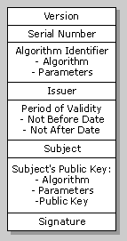

| ||||
To use Microsoft® Authenticode™, a set of client files, publishing tools, and a signing DLL are required.
Client files include the following:
Publishing tools and the signing DLL include the following:
| MakeCert.exe | Creates an X.509 certificate for testing purposes only. |
| Cert2SPC.exe | Creates an SPC for testing purposes only. |
| SignCode.exe | Signs and time stamps a file. |
| ChkTrust.exe | Checks the validity of the file. |
| MakeCTL.exe | Creates a certificate trust list. |
| CertMgr.exe | Manages certificates, CTLs, and CRLs. |
| SetReg.exe | Sets registry keys controlling certificate verification. |
| Signer.dll | Performs signing. |
The X.509 protocols include a structure for public-key certificates. A certificate authority (CA) assigns a unique name to each user and issues a signed certificate containing this name and the user's public key. The following diagram shows an X.509 certificate.

These are the meanings for each field:
| Field | Meaning |
|---|---|
| Version | Number identifying the certificate format. |
| Serial Number | Value unique to the CA. |
| Algorithm Identifier | Algorithm used to sign the certificate, together with any necessary parameters. |
| Issuer | Name of the CA. |
| Period of Validity | Dates between which the certificate is valid. |
| Subject | Name of the user. |
| Subject's Public Key | Public key of the user, any necessary parameters, and its algorithm name. |
| Signature | Signature of the CA. |
The topic of digital signing is discussed more fully in the following documents:
Did you find this topic useful? Suggestions for other topics? Write us!
© 1999 Microsoft Corporation. All rights reserved. Terms of use.